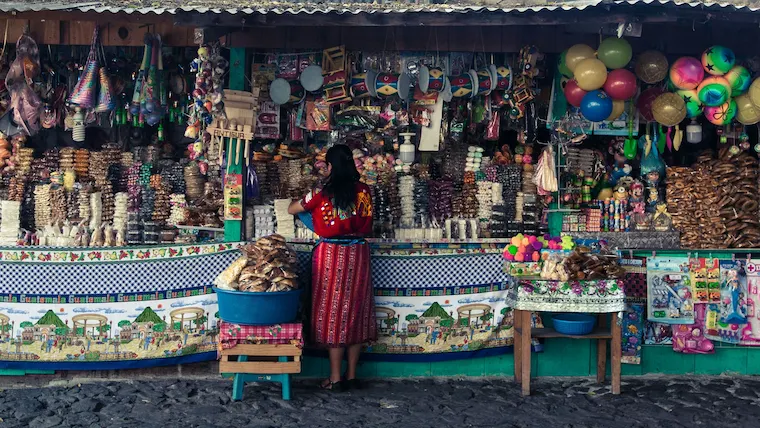
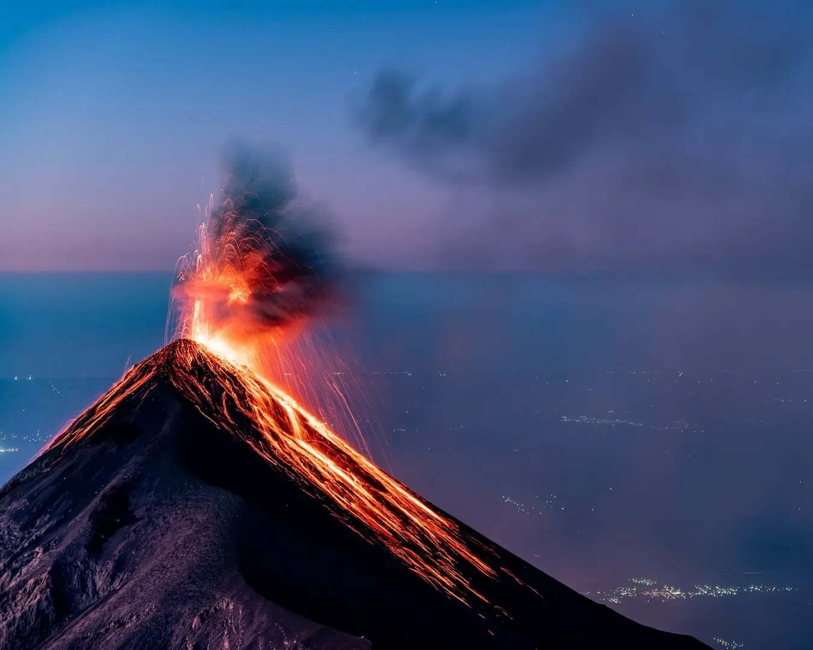
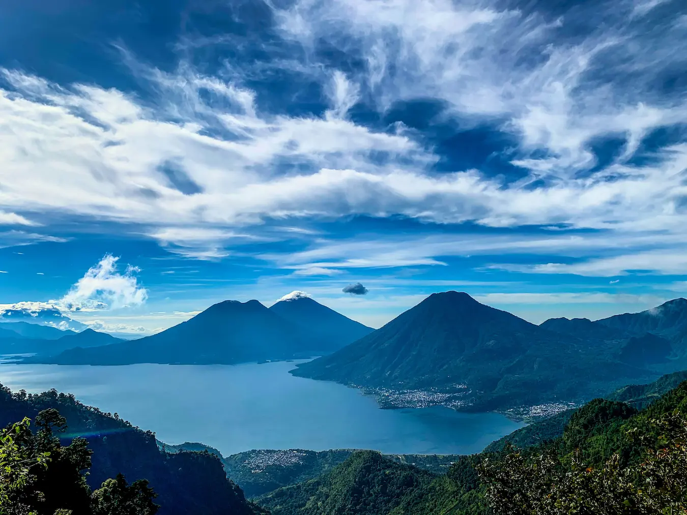
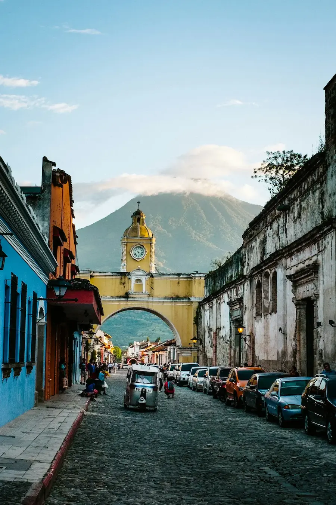

Country Data
- Capital: Guatemala City
- Population: 17.9M
- Area: 108,889 km²
- Languages: Spanish, Mayan
- Currency: Quetzal
- Time Zone: UTC -6
Weather

Temperature: 24 °C
Wind Speed: 10 km/h
Wind Chill:
Highlights


